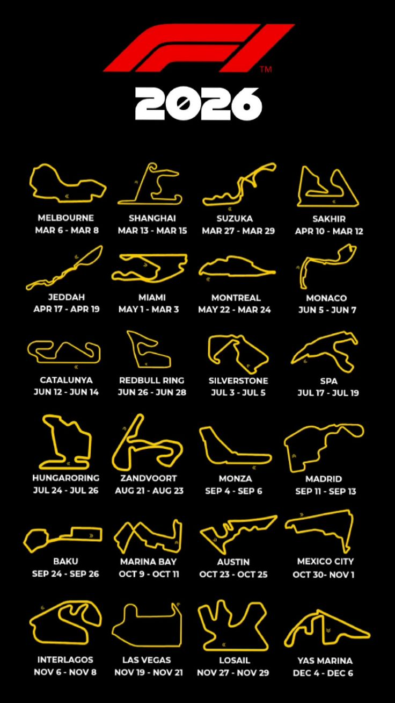

Circuito de Mónaco
Uno de los circuitos más famosos y desafiantes, conocido por sus estrechas calles y curvas cerradas.
Mundo Fórmula 1
Explora los circuitos más emblemáticos de la Fórmula 1, desde los clásicos hasta los modernos, y descubre la historia detrás de cada uno de ellos.
Uno de los circuitos más famosos y desafiantes, conocido por sus estrechas calles y curvas cerradas.
Ubicado en el Reino Unido, es uno de los circuitos más antiguos y prestigiosos del calendario de Fórmula 1.
Conocido como el "Templo de la Velocidad", este circuito italiano es famoso por sus largas rectas y alta velocidad.
Ubicado en Japón, es famoso por su diseño en forma de "8" y su desafiante curva 130R.
